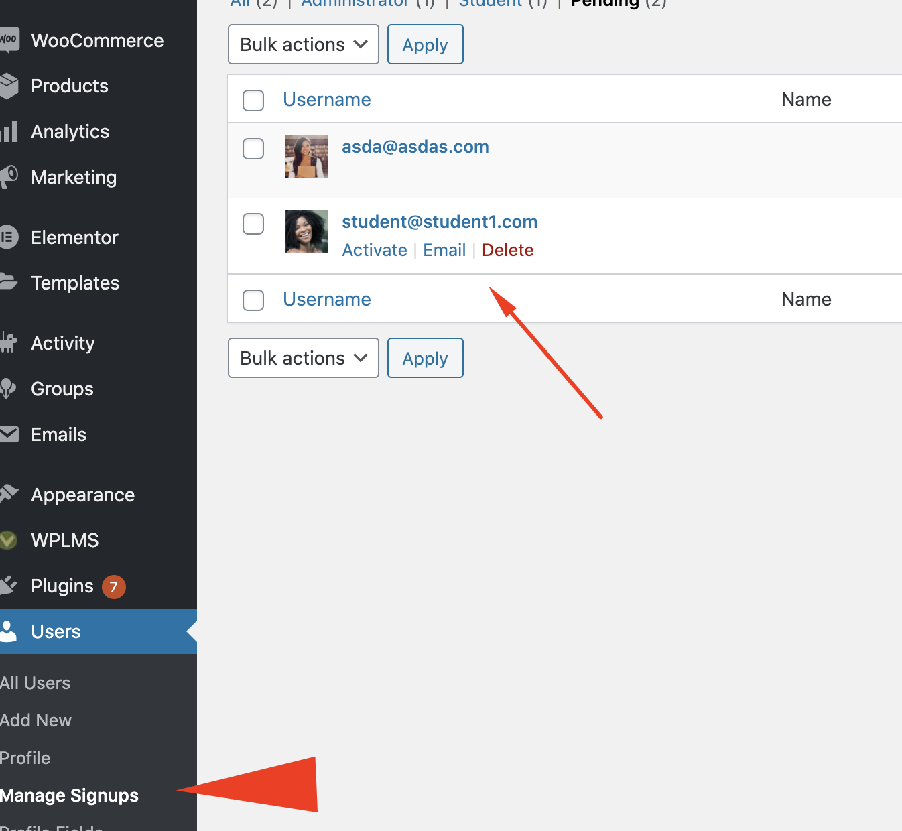
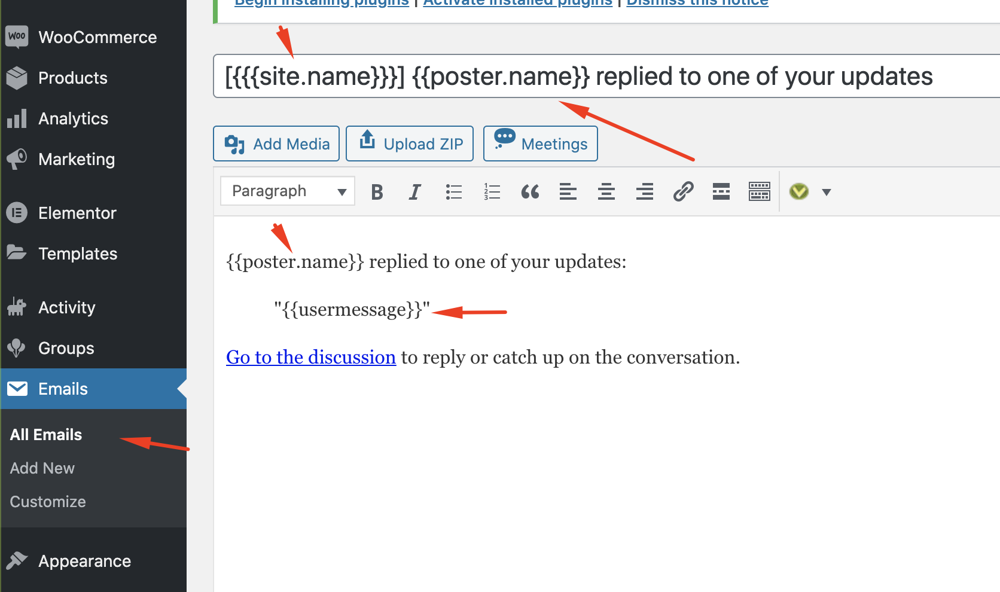
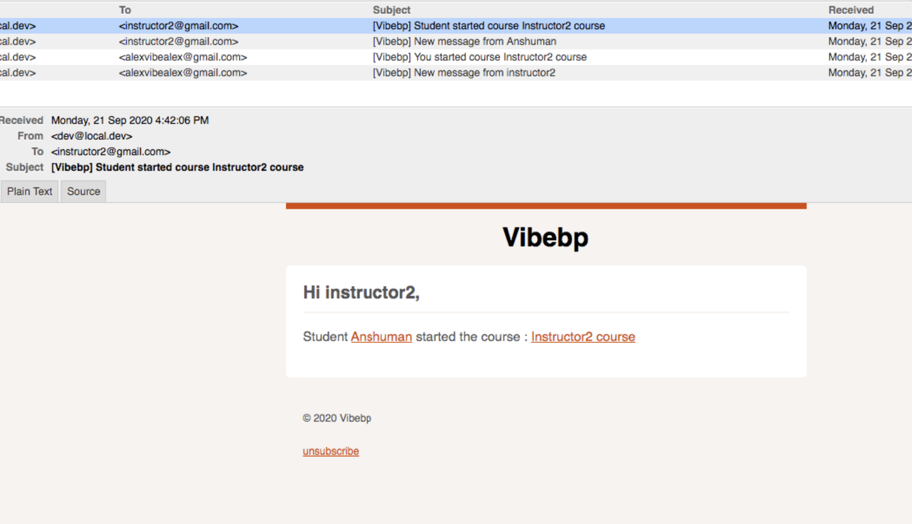
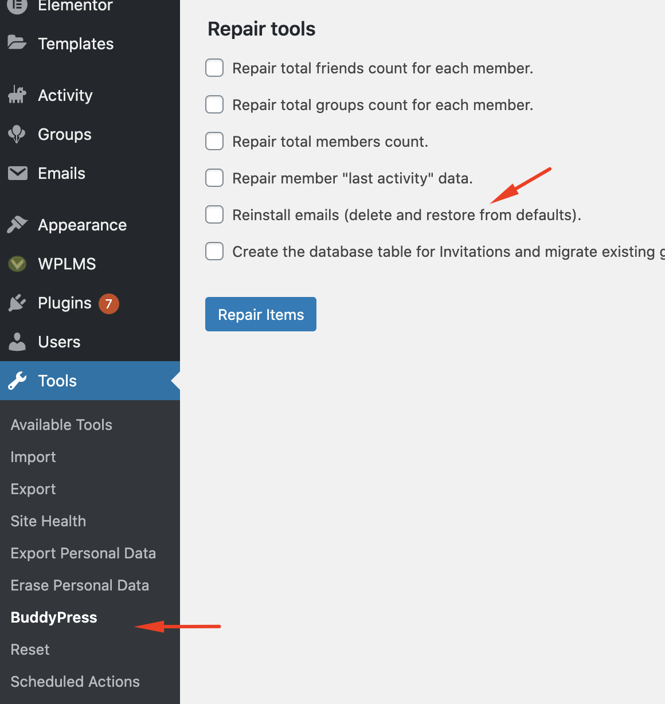
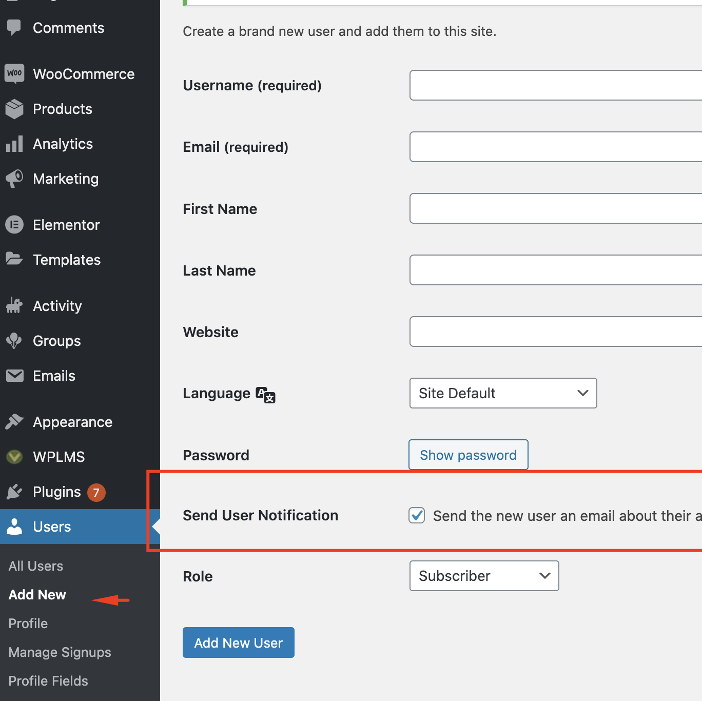
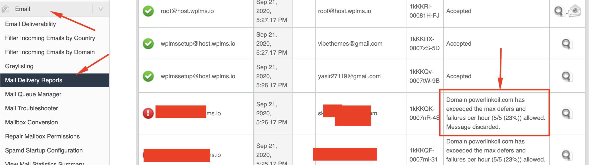

Registrations and Login Guide for WPLMS Administrators.
This we will understand how logins and registrations work in the latest WPLMS verison 4.
The JWT Login
The WPLMS Version 4 login is modern login system based on JWT, JSON web Token, which is the modern web standard for login systems. Almost all modern sites use it. Unfortunately, WordPress still works with Cookie and session based login systems which are more than a decade old.
VibeBP LoginThe login system the WPLMS v4 uses is powered by the VibeBP plugin.
The backbone of the WPLMS v4 is the VibeBP framework. The WPLMS Plugin it self is an addon to the VibeBP framework.
The same login system is used in the WPLMS v4 mobile apps. So it is really powerful cross platform login system. Also the exportable courses feature of version 4 (not yet launched) the user will be able to authenticate using this login system and pursue courses remotely even where there is no internet. This happens because the JWT is a browser centric login system.
Yes you can use the verison 3 login. Which is the default WordPress login. The only setting you need to enable in WP admin - vibebp - Settings - WP Login sync. To keep everything in version 4 and only the login form to wplms v3, you will need to copy your header template file from the version 3 and place it in the child theme.
For example : You are using Demo10, which uses the transparent header, then copy header-transparent.php from the WPLMS v3 and place it in your child theme : wp-content/themes/wplmsblankchildtheme
There are few key settings for this login system which are located in the WP admin - Vibebp - Settings - General tab.
- Client Id This is a security key of sorts and it is a necessary field which must always have a value. Some of the API's by default are public in nature like the Login, Directories API, Course , Members directories etc. You can periodically changing this value the bots can not use the API's. When you change this value make sure you clear out all the server cache and if using service worker change the version and re-generate it.
- Synchronise WP with VibeBP login Currently this is a one way sync, user logged into WP will automatically get logged into VibeBP. The reverse is also possible but we lose out on advantage of the JWT login if we log the user into WordPress.
- VibeBP Logout redirect You can set a landing page where the user lands when he logs out, Totally optional.
- Token Duration This is the duration of the logged in session of a user. The user login status is determined by the Token and token is stored in the browser and you can set how long the token duration is valid. Now, although JWT tokens are secure as they are saved in the browser, you can increase of decrease this value, the user will be required to re-login when the duration ends. We recommend setting this value to 1 week.
When you login to VibeBP , the token is evalutaed and expanded. The explanded token contains all information about the logged in user the same information contained in the WordPress current user object. Which means we are storing WP user roles and capabilities.
Default Registration
To keep the registraion process simple, WPLMS comes with an inbuilt registration which is the email and the password.
Although creating a complex registration form is perfectly valid and we have options to add those as explained below.
If you want to add custom fields in the default registration form then it is possible by some code.
As an example we have already extended this registration using our WPLMS Phone authentication addon [$19, supports free 50 sms/minute via firebase].
Direct link to watch on youtubeThe fonts and the style that get applied on the default login and registration is taken from what is applied on the Log-in Trigger. So if you add a text upper case on the Login trigger, it gets applied on all of the login and registration popup as visible in above screenshot.
On registration the buddypress would send an activation email and the user will need to click on a link to ativate his account. On account activation the user is logged into the wordpress.
See video walk through :
The Social logins
If any user attemps to login via social login theit accounts are automatically created without any need for verification.
The social logins are integrated with Firebase. See below video on how to configure these.
BuddyPress Registration
Another alternative to use is the buddypress rregistration form. This form is generated by the BuddyPress automatically and it appears only on the registration page. So you can only have 1 version of this form.
This registration page is the page that you set in WP admin - Settings- BuddyPress - pages - register
This page has been same for WPLMS version 3 and version 4 as it is generated by BuddyPress. This page is built up of profile fields that are defined in the WP admin - users - profile fields section.
In this section you can customise the profile fields into various groups, you can create groups, add or remove fields.
The BuddyPress would automatically pickup fields from the Primary profile field group and show in the registration form.
The one most important field in this whole form is the "Name". This fields get pre-built on BuddyPress installation and it is labelled as "primary" inside a primary field group.
On registration the buddypress would send an activation email with a link to your site for activating the account. The users registering on the site are located in the WP admin - Users - Manage-signups sections and only after activating the accounts are moved to the WP admin - Users section.
WooCommerce Registration
By default WooCommerce takes care of account creation during the registration process.
The guest checkout is automatically disbaled when there is a product in the cart which is associated with a course.
Once the pricing is set for a course , here's the user flow and registration for a non-logged in user.
See this FAQ if user is not enrolled in the course even after order completion.
Custom Registration Forms
WPLMS has Custom Registration forms functionality. Where in you can create unlimited registration forms using the same BuddyPress fields.
Even if the global registration is off in WP admin - Settings - anyone can register, the custom registration forms will still work and use the BuddyPress email and activation system.
Custom registration forms has many actions and use cases. It is one of the most useful functinalitites which you can use to register into BuddyPress. As it uses BuddyPress fields, users registering using this form are actually filing up details in their profiles
Custom Registration forms use cases
- Instructor registration form
- Student registration form
- Registration form for any Custom member type classification.
- Registration form to enroll into a Batch / Class / Department
- Registration form by passing activation emails and directly logging in.
- Registration form for manually approving candidates.
- Registration form for Batch, enroll into Bulk courses simultaneously.
- Sending custom activation mail to registration form.
- Post account activation sending custom welcome mail to users registering from a registration form.
Emails
WPLMS uses the BuddyPress email system which runs on Templates. You can customise email templates in your language easily form the WP admin - Emails section. You can also change the design of these email templates from the WP admin - Emails - Customise seciton.
However, to add new template this is only possible programmatically.
The email system works on situations and tempaltes. So when a situation occurs the email template connected to the situation is sent.
To view all Email templates, simply check the WP admin - Emails section. Every email will consist of text and tokens. The tokens are wrapper in double curly braces : {{token}} or triple curly braces {{{ token }}}. Triple curly braces are links with variables, where as double are simply variables.
You can change all the text but you need to keep the tokens as it is unless you want to remove information from the email itself.
Adding more tokens is only possible programatically and we can help you in that, you can request a paid customisation at wplms.io/support for this.
WPLMS extensively uses the BP Email system to send out emails.
Default BuddyPress comes with 15 email template and WPLMS registers around 60 email templates for various actions and hooks.
The Email Options
Located WP admin - LMS - Settings - Emails, you can set some key options like. In the emails sent to users "From" field can be modified here. And From Name can also be set here.
You can also enable Welcome emails. That is the email sent to the user post account activation.
Welcome emails documentThe Email Schedule
Here you can specify schedule for emails to notify the users about upcoming events.
- Drip Feed email, send user reminder about his upcoming lesson in a drip feed enabled course
- Course Expiry email, send user reminder about his course accessibility duration ending soon.
- Inactive USer Email, send reminder that the user has not logged into the site for X days. You can set more options to this email.
- Course review email, send reminder to user for reviewing a course after they have finished the course.
The Scheduled Email
This contains list of emails which are scheduled to be send to different users in your site. You can remove the scheduled emails as well.
This is important in miscellaneous cases, for example a user who purchased the course applied for a refund, so he should not get a course epxiry email, you can confirm and remove that email from here in case it is not automatically removed.
TroubleShooting Emails
Emails is a core functionality of WPLMS.
However, thre are many reasons the emails do not work as expecteds.
Lets see how we can identify the problem and make this work.
The issue with emails is that it is being sent from the server where your website is hosted. So a lot of the issues may not not be connected to the WPLMS.
Step 1 : Is the email which has to be sent registered in WPLMS ?
You can simply check if the which should be send is registerd in the WP admin - Emails section. If you find that the email is not registered then you can register it by :
- Resetting BuddyPress emails, if the email is a BuddyPress email
- Resetting WPLMS emails, if the email is a WPLMS email link
Step 2 : For signup emails, check if the user was recorded in USer - Signups ?
In case of signup emails we can track if the email sending was actually attempted, for this you can locate te WP Admin - USers - Pending signups section.
Step 3 : Are emails working in your WordPress site ?
Check if the Emails are working. You can test this by going to WP admin - Users Add new. And register a sample user to one of your email ids. While registering the user ensure you check the "Send email" and verify if you get an email on the email id.
If emails are not working still, this is not confirmed that the error exists in your server SMTP. You can chose the Alternative step4 or move to step5 to debug the server.
Step 5 : Checking server logs
If you are not comfortable with solution at point 4. Then you can try to debug why your server is not sending emails. For this you need to login to the WHM or cPANEL and look for mail delivery reports.
Here you can see the exact reason why the email was not sent to the user.
Or login via SSH of your server and locate the "exim" file and locate the issues in the email.
Step 6 : Emails landing in Spam
This is a very common issue with BuddyPress emails. There are many reasons for this, from blacklisting to reputation of the hosting company, to incorrect SPF, DKIM, reverse DNS and PTR records.
You can register to the Gogle Postmaster tools : https://postmaster.google.com/ and track various factors contributing to your emails landing up in spam.
FAQs
Common FAQ's and solutions available to known issues.
Lets see how we can identify the problem and make this work.
There is a known bug in BuddyPress version 6.2.0 with WP 5.5 or more. Please make sure your BuddyPress version is 6.3.0 or more for WP 5.5 setips/